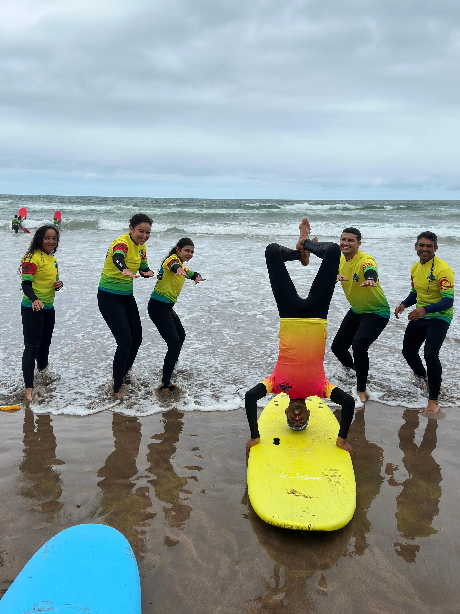
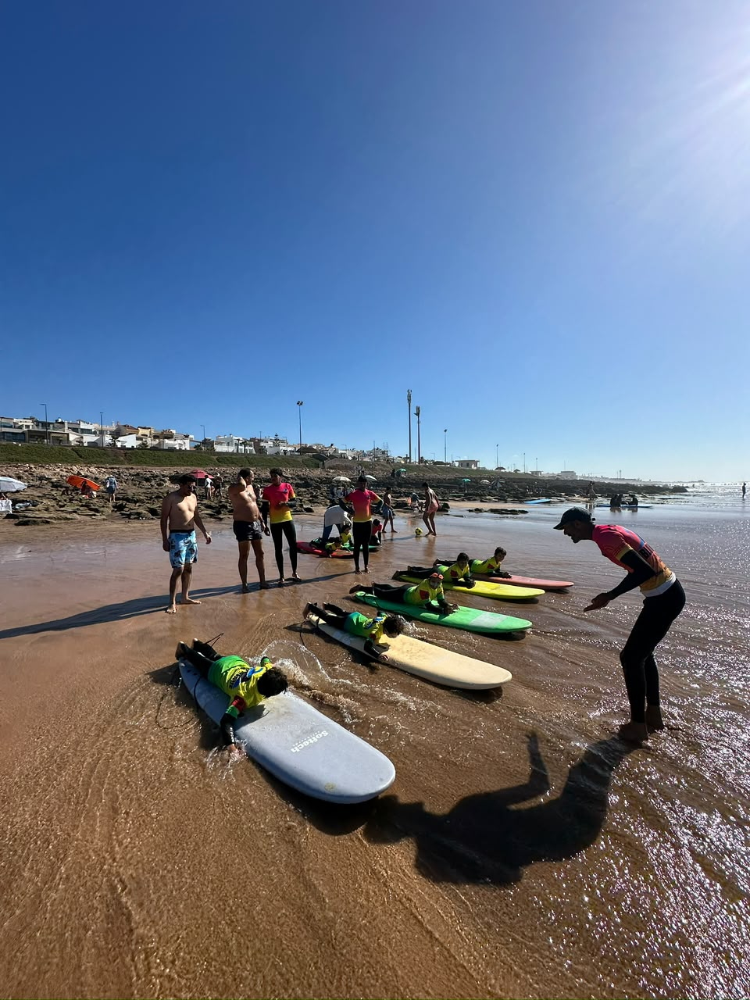
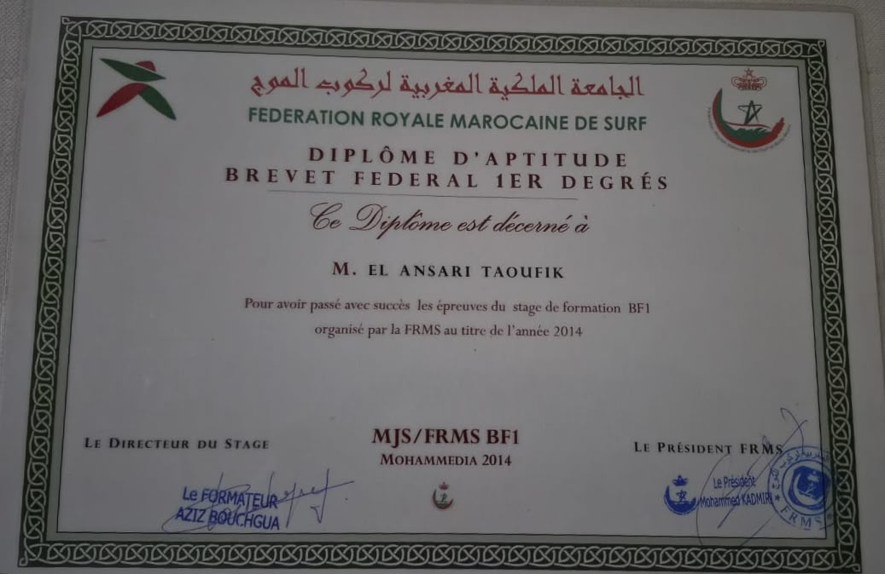
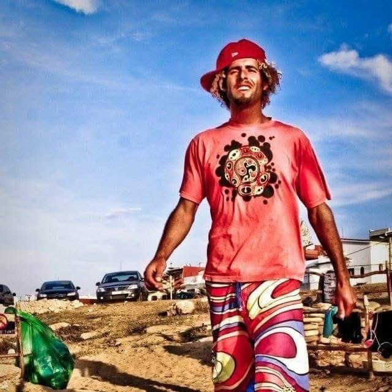
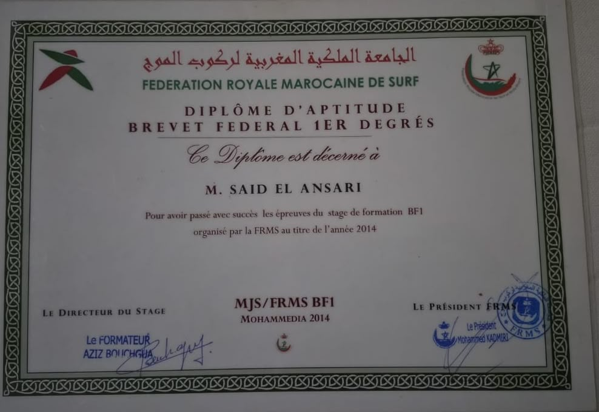

01LES PREMIÈRES SENSATIONS
Premières vagues
Comprendre l’océan, ramer, trouver son équilibre et se lever sur la planche. Tout commence ici.
Débutant↗
JACK BEACH, MAROC · L’OCÉAN VOUS ATTEND
À Jack Beach, on partage les vagues, les progrès et les sourires. Enfants ou adultes, débutants ou passionnés : bienvenue dans la famille Blue Wave.

L’ESPRIT BLUE WAVE ↗01 / BIENVENUE À L’ÉCOLE
Blue Wave, c’est le plaisir d’apprendre ensemble, les pieds dans le sable et les yeux sur les vagues de Jack Beach.
Débutant curieux ou surfeur en quête de progression, trouvez votre place dans l’eau. Nos coachs vous accompagnent sur la plage, puis dans les vagues, avec une attention portée à la sécurité, à la technique et au plaisir.
Rencontrons-nous sur la plage ↗02 / À CHACUN SA VAGUE
Débutant, intermédiaire ou avancé.
Un cours adapté à votre expérience.
Comprendre l’océan, ramer, trouver son équilibre et se lever sur la planche. Tout commence ici.
Mieux choisir sa vague, affiner son take-off et maîtriser sa trajectoire. Un pas de plus vers l’autonomie.
Travailler la vitesse, la lecture des vagues et la précision des manœuvres selon vos objectifs.
03 / LES PETITS SURFEURS
Découvrir l’océan en s’amusant. Les enfants apprennent les premiers gestes sur le sable, puis prennent confiance dans l’eau avec leurs coachs.

KIDS CLUB / BLUE WAVE04 / LES FORMULES
Choisissez votre rythme.
On s’occupe des prochaines vagues.
Le plaisir de progresser ensemble.
Débutant, intermédiaire ou avancé.
Un cours centré sur votre progression.
Disponible aussi pour les enfants.
05 / L’ÉQUIPE BLUE WAVE
Taoufik et Said El Ansari.
À vos côtés, du sable aux vagues.
FORMÉS POUR VOUS ACCOMPAGNER
Leurs diplômes d’aptitude de la Fédération Royale Marocaine de Surf attestent du brevet fédéral de 1er degré obtenu en 2014.
Pour une première vague ou un nouveau cap, retrouvez un enseignement attentif à votre niveau, à votre aisance et aux conditions du jour.
Préparer mon cours ↗
MONITEUR / 01
Brevet fédéral de surf · 1er degré
Fédération Royale Marocaine de Surf · 2014


MONITEUR / 02
Brevet fédéral de surf · 1er degré
Fédération Royale Marocaine de Surf · 2014

06 / LES JOURS BLUE WAVE
07 / AVANT DE VENIR
Oui ! Les cours débutants abordent les bases sur le sable, puis dans l’eau. Indiquez votre expérience à l’équipe pour préparer une session adaptée.
Prévoyez un maillot, une serviette, de l’eau et une protection solaire. Le matériel de surf est inclus dans la session. Confirmez vos besoins avec l’équipe avant votre venue.
Ouvrez « Réserver pour un enfant ». Renseignez son âge, son niveau, s’il sait nager et les informations de santé utiles à son encadrement. Vous choisissez aussi une date et un cours en groupe ou privé. L’école confirme ensuite le créneau avec vous.
Le créneau dépend des conditions de l’océan. Contactez l’équipe avant votre déplacement pour confirmer le maintien de votre session ou convenir d’un autre créneau.
08 / RÉSERVATIONS
Choisissez votre espace de réservation. Préparez votre demande et vérifiez son récapitulatif avant de l’envoyer à l’école sur WhatsApp.
Groupe : 200 DH · Privé : 300 DH
Par personne et par séance de 2 heures. Packs négociables.
Jack Beach · Dar Bouazza · Maroc
Nous retrouver à Jack Beach ↗Un formulaire pour le parent : âge, niveau, natation et informations utiles à l’encadrement.
Débutant, intermédiaire ou avancé. Choisissez votre date et votre cours en groupe ou privé.